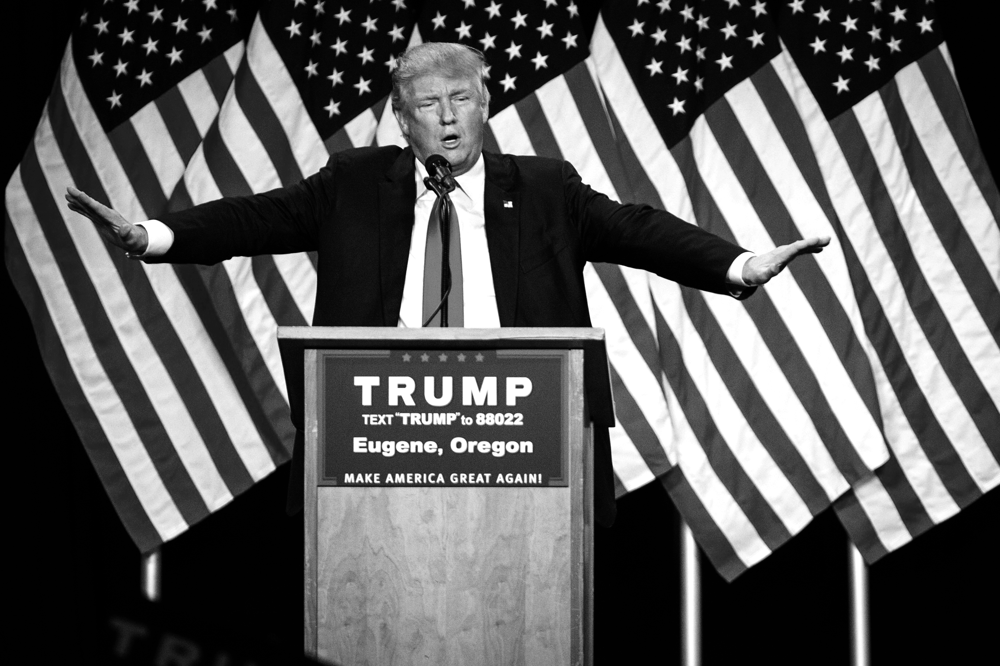

#the#
other
side#
trump
President Donald Trump and Mike Pence are turning to their supporters to help them in their quest to prevent National Football League (NFL) players protesting during the national anthem. In a petition posted on the GOP website, the Trump Make America Great Again Committee asked individuals to give their name, email and zip code in order to "show your patriotism and support" in an official stand for the national anthem. It's unknown how many signatures the petition currently has.
The petition comes a day after Trump criticized NFL Commissioner Roger Goodell and the NFL for not forcing players to stand for the national anthem. "The NFL has decided that it will not force players to stand for the playing of our National Anthem," Trump tweeted on Wednesday morning. "Total disrespect for our great country!"
aftermath

@NFL: Too much talk, not enough action. Stand for the National Anthem.
-Donald Trump via Twitter
Trump's comments have been widely condemned by NFL team owners, officials and players.
NFL commissioner Roger Goodell said: “Divisive comments like these demonstrate an unfortunate lack of respect for the NFL, our great game and all of our players, and a failure to understand the overwhelming force for good our clubs and players represent in our communities.”
Team owners, even some who have supported Trump's campaign, showed solidarity with their players.
New England Patriots owner Robert Kraft said he was "deeply disappointed by the tone of the comments made by the president."
He added that there is "nothing more divisive than politics" and said he supported the players' "right to peacefully affect social change and raise awareness in a manner that they feel is most impactful."